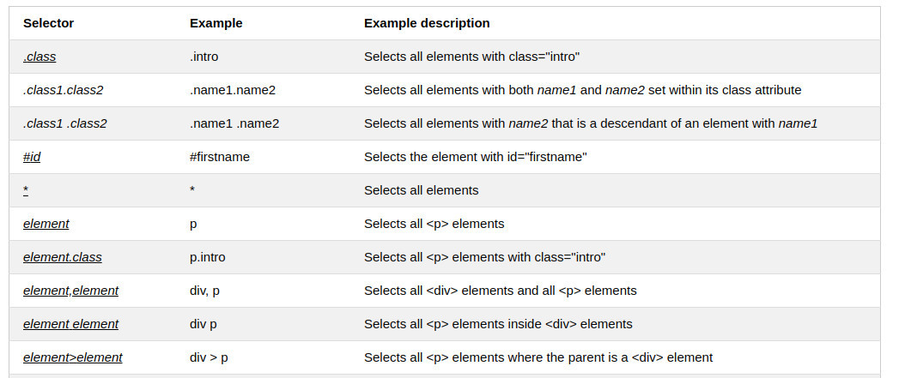
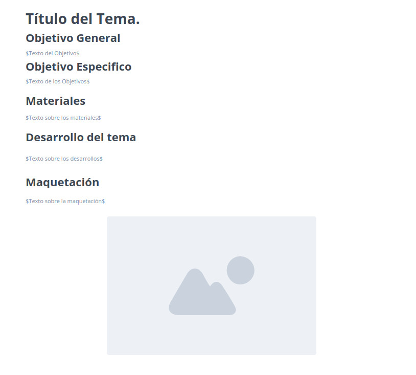

CSS3: Estilos internos y Externos, Selectores CSS.
Objetivo General
Diseñar un Objeto Virtual de Aprendizaje (OVA) del curso de Diseño de Sitios Web para la UNAD.
Objetivo Específicos
- Elaborar la página web planning.html
- Publicar el borrador de los contenidos y/o recursos del sitio web del tema seleccionado con GitHub Page
- Mostrar el mockup de la página principal del OVI
Materiales
CSS Selectors https://www.w3schools.com/css/css_selectors.asp
CSS Tutorial https://www.w3schools.com/css/default.asp
Selectores CSS https://developer.mozilla.org/es/docs/Web/CSS/Selectores_CSS
Entornes, ¿Que es CSS, realmente? https://developer.mozilla.org/es/docs/Learn/Getting_started_with_the_web/CSS_basics
CSS 3 https://developer.mozilla.org/es/docs/Web/CSS
Conceptos Básicos de CSS (Hoja de Estilo en Cascádas) http://www.naiarafernandez.com/conceptos-basicos-css/
Desarrollo del tema
CSS3 y los Estilos Internos y Externos
- CSS3 es la última una versión de CSS, el cual permitió el incremento del alcance de las especificaciones e hizo que fuera más efectivo desarrollar y publicar recomendaciones separadas por módulos.
- Los estilos Internos son una hoja de estilo interna que se usa en una sola pagina con un estilo único incrustado. Los estilos internos se definen en el elemento "style" dentro de la página "HTML".
- Los estilos Externos son una hoja de estilo externa, que sirve para cambiar el aspecto de un sitio web completo cambiando un sólo archivo. Una hoja de estilo externa se puede escribir desde cualquier editor de texto, se debe guardar con la extensión .css y no debe contener ninguna etiqueta HTML.
- Los estilos Externos son una hoja de estilo externa, que sirve para cambiar el aspecto de un sitio web completo cambiando un sólo archivo. Una hoja de estilo externa se puede escribir desde cualquier editor de texto, se debe guardar con la extensión .css y no debe contener ninguna etiqueta HTML.
Los Selectores CSS
En CSS, los selectores son patrones que se utilizan para seleccionar los elementos a los que se desean aplicar un estilo determinado. También, los selectores son aquellos que definen sobre qué elementos se va aplicar un conjunto de reglas CSS. Un selector hace referencia a un elemento HTML al cual se le quiere aplicar un estilo.
Los selectores CSS son utilizados para encontrar o seleccionar los elementos HTML que se les quiera aplicar un estilo en función del nombre del elemento, del id, de la clase, del atributo, etc.
Los selectores CSS se pueden dividir en 5 categorías:
- Selectores Simples: seleccionan elementos basados en el nombre, el id y la clase.
- Combinación de Selectores: selecciona los elementos que estan en función de una relación específica entre ellos.
- Selectores de Pseudo-clase: Selecciona los elementos que se encuentran en un estado determinado.
- Selectores de Pseudo-elementos: Selecciona y aplica estilo a una parte de un elemento.
- Selectores de Atributos: Selecciona los elementos que están basados en un atributo o en un valor del atributo.
Los Selectores más comunes son:
- Selector de Elementos: Éste elige elementos en función del nombre de los mismos.
- Selector de ID: Éste utiliza el atributo id de un elemento HTML con el fin de seleccionar un elemento específico, éste será unico dentro de una página.
- Selector de Clase: Éste elige los elementos con un atributo de clase específico. Para ello se debe escribir un punto delante del nombre de la clase.
- Selectores de Pseudo-elementos: Selecciona y aplica estilo a una parte de un elemento.
- Selectores de Atributos: Selecciona los elementos que están basados en un atributo o en un valor del atributo.
Ejemplos de Selectores:
A continuación se muestran unos ejemplos de selectores en CSS.

Maquetacion

Enlace del Mockup: https://app.moqups.com/aH9h8Mr6Tg/view/page/aa33141ef
Ir a página principal